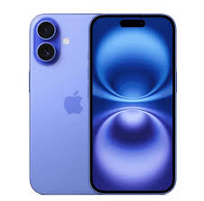

Użależnienia od ekranów
uuuuuuuuuuuuuuuuuuuuuuuuuuuuuuuuuuuuuuuuuuuuuuuuuuuuuuuuuuu

Jak radzić sobie z użależnieniem
- Ustaw limity czasowe na aplikacje i trzymaj się ich.
- Planuj przerwy — np. technika Pomodoro: 25 min pracy/50 min bez ekranu.
- Wyłącz powiadomienia lub używaj trybu „Nie przeszkadzać”.
- Nie używaj ekranów przed snem — przynajmniej 30–60 minut bez urządzeń.
- Zostaw telefon w innym pokoju podczas posiłków i snu.
- Zastąp część czasu hobby: sport, książka, spotkania z przyjaciółmi.
- Korzystaj z aplikacji, które monitorują czas ekranowy i pokazują statystyki.
- Jeśli czujesz, że samodzielnie nie dajesz rady — porozmawiaj z rodziną lub specjalistą.